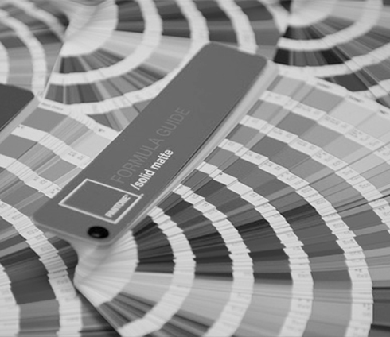

| "Tout se marie avec le gris, c'est donc la couleur recommandée pour les accessoires." - Christian Dior. | GRIS DIOR #A8A9A8 |
| Le gris, à l’instar du blanc, s’utilise partout dans la maison et possède la même élégance intemporelle. Dans la symbolique des couleurs, le gris représente deux univers très opposés : on l’associe à la tristesse et la mélancolie, alors qu’il renvoie à bien des valeurs positives, comme la sagesse, la plénitude et la connaissance. À la fin du Moyen Âge, le gris est même perçu comme étant l’opposé du noir, soit symbole d’espérance et de bonheur. |
 |
|  | Parfaitement neutre lorsque entre le noir et le blanc, le gris peut rassembler toutes les autres couleurs et donc arborer des nuances incroyablement variées : du plus clair au plus foncé, on retrouve des teintes aux noms évocateurs telles que le gris souris, le fameux gris taupe, le gris tourterelle, le gris perle, le gris ardoise ou le gris anthracite, pour ne citer que les plus connus. |
| Souvent discret et inaperçu, le gris est pourtant présent partout et est synonyme de progrès, voire de finesse. Christian Dior et Apple en sont les parfaits exemples. Le célèbre couturier couvre les murs de son hôtel particulier d’un gris perle connu aujourd’hui sous le fameux nom de « gris Dior ». En effet le gris Dior et le gris Sidéral sont immédiatement associés à ces figures du luxe, reconnaissables en un coup d’œil. |